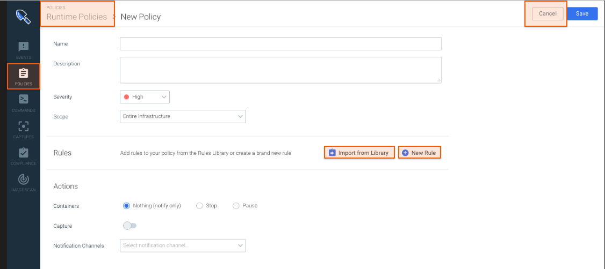
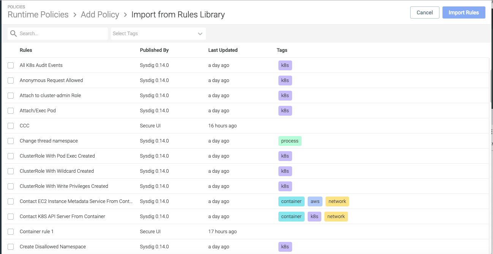

**Manage Policies**
<intro>
Create a Policy
Select
Policiesand click+Add Policy.Fill out the form as described below, and click
Save.The instructions below are divided into Basic Parameters, Rules, and Actions.
|  |
Define Basic Parameters
Name and Description: Provide meaningful, searchable descriptors
Policy Severity: Choose the appropriate severity level as you would like to see it in the
Runtime PoliciesUI.Policy severity is subjective and is used to group policies within a Sysdig Secure instance.
NOTE: There is no inheritance between the underlying
rule prioritiesand the severity you assign to the policy.Policy Scope: Define the scope to which the policy will apply. Some examples:
-example
-example
-example
Add Rules
You can select existing rules from the Library or create new rules on the fly and add them to a policy.
The Policy Editor interface provides many flexible ways to add rules to or remove rules from a Policy; the instructions below demonstrate one way.
See also: **Manage Rules**
Import from Library
From the New Policy (or Edit Policy) page, click
Import from Library.The Import from Rules Library page is displayed.
 Select the checkboxes by the rules to import.
Tip
You can pre-sort a collection of rules by searching for particular keywords or tags, or clicking a colored Tag icon (e.g. ).
Click Mark for Import.
A blue
Importicon
appears to the right of the selected rules and the
Import Rulesbutton is activated.Click
Import Rules.The Policy page is displayed with the selected rules listed.

Tip
You can remove a rule from a Policy by clicking the X next to the rule in the list.
Create a Rule from the Policy Editor
Define Actions
Containers: Select what should happen to affected containers if the policy rules are breached:
-
Nothing (alert only):Do not change the container behavior; send a notification according to Notification Channel settings.-
Stop:Stop the container. (Must be restarted manually? or what are the parameters of a "Stop"?)-
Pause:Pause the container (until what?)Capture:
See also: ...
Notification Channels:
See also...